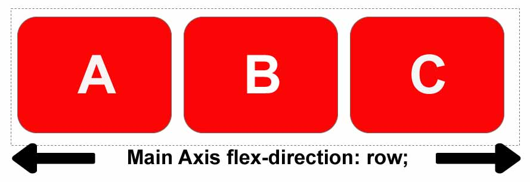
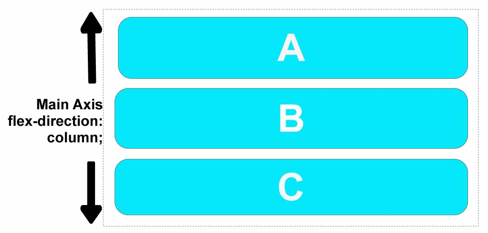
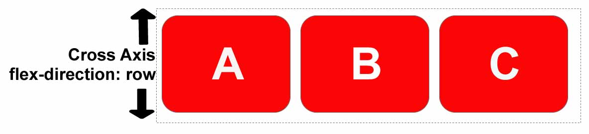
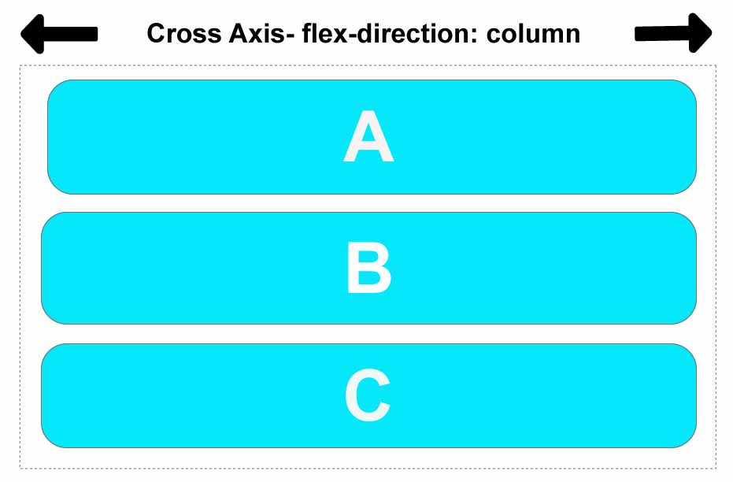

This Cool little thing called Flexbox
Hey, you Flexing?
Back in 2009 I took 2 semesters of HTML/CSS classes. This was the bad old days that a site like
caniuse.com
would light up like a christmas tree of colors on who allowed what css techniques. I remember that my professor would
check your site on I.E. Chrome, Firefox and Safari. By all means I’m not saying some of those issues don’t still happen
but they’ve gotten worlds better.
As I am refreshing my knowledge of HTML/CSS the first thing that blew my mind away was Flexbox. Back when I first
learned HTML/CSS all positioning was done with positioning. Absolute, Relative, Static, Fixed, Inherit. This wasn’t easy
because what looked great in chrome looked horrible in IE. and lining stuff up was a task. Flexbox seems like such an
amazing solution to so many of these tasks.
Flexbox is a single dimensional layout model that helps you easily align and space elements across your page. You layout either in a row or a column. More complex layout can be handled with a grid (also awesome). If you use them together, Pow, it’s a powerhouse.
Two Axis of Flexbox
When working with flexbox you need to think in terms of two axes — the main axis and the cross axis. The main axis is defined by the flex-direction property, and the cross axis runs perpendicular to it. Everything we do with flexbox refers back to these axes, so it is worth understanding how they work from the outset.
The main axis
The main axis is defined by flex-direction, which has four possible values:
- row
- row-reverse
- column
- column-reverse
Should you choose row or row-reverse, your main axis will run along the row in the inline direction.
Choose column or column-reverse and your main axis will run from the top of the page to the bottom — in the block direction.
The cross axis
The cross axis runs perpendicular to the main axis, therefore if your flex-direction (main axis) is set to row or row-reverse the cross axis runs down the columns.
If your main axis is column or column-reverse then the cross axis runs along the rows.
Understanding which axis is which is important when we start to look at aligning and justifying flex items; flexbox features properties that align and justify content along one axis or the other.
The Flex Container
An area of a document laid out using flexbox is called a flex container. To create a flex container, we set the value of the area's container's display property to flex or inline-flex. As soon as we do this the direct children of that container become flex items. As with all properties in CSS, some initial values are defined, so when creating a flex container all of the contained flex items will behave in the following way.
- Items display in a row (the flex-direction property's default is row).
- The items start from the start edge of the main axis.
- The items do not stretch on the main dimension, but can shrink.
- The items will stretch to fill the size of the cross axis.
- The flex-basis property is set to auto.
- The flex-wrap property is set to nowrap.
The result of this is that your items will all line up in a row, using the size of the content as their size in the main
axis. If there are more items than can fit in the container, they will not wrap but will instead overflow. If some items
are taller than others, all items will stretch along the cross axis to fill its full size.
You can see in the example below how this looks.
.box {
display: flex;
}
<div class="box">
<div>One</div>
<div>Two</div>
<div>Three
<br>has
<br>extra
<br>text
</div>
</div>
Changing flex-direction
Adding the flex-direction property to the flex container allows us to change the direction in which our flex items
display. Setting flex-direction: row-reverse will keep the items displaying along the row, however the start and end
lines are switched.
If we change flex-direction to column the main axis switches and our items now display in a column. Set column-reverse
and the start and end lines are again switched.
The example below has flex-direction set to row-reverse.
.box {
display: flex;
flex-direction: row-reverse;
}
<div class="box">
<div>One</div>
<div>Two</div>
<div>Three</div>
</div>
Multi-line flex containers with flex-wrap
While flexbox is a one dimensional model, it is possible to cause our flex items to wrap onto multiple lines. In doing
so, you should consider each line as a new flex container. Any space distribution will happen across that line, without
reference to the lines either side.
To cause wrapping behavior add the property flex-wrap with a value of wrap. Now, should your items be too large to all
display in one line, they will wrap onto another line. The sample below contains items that have been given a
width, the total width of the items being too wide for the flex container. As flex-wrap is set to wrap, the items wrap.
Set it to nowrap, which is also the initial value, and they will instead shrink to fit the container because they are
using initial flexbox values that allows items to shrink. Using nowrap would cause an overflow if the items were not
able to shrink, or could not shrink small enough to fit.
.box {
display: flex;
flex-wrap: wrap;
}
<div class="box">
<div>One</div>
<div>Two</div>
<div>Three</div>
</div>
The flex-flow shorthand
You can combine the two properties flex-direction and flex-wrap into the flex-flow shorthand. The first value specified
is flex-direction and the second value is flex-wrap.
In example below try the first value to one of the allowable values for flex-direction.
.box {
display: flex;
flex-flow: row wrap;
}
<div class="box">
<div>One</div>
<div>Two</div>
<div>Three</div>
</div>
Properties applied to flex items
To have more control over flex items we can target them directly. We do this by way of three properties:
flex-growflex-shrinkflex-basis
Before we can make sense of these properties we need to consider the concept of available space. What we are doing when
we change the value of these flex properties is to change the way that available space is distributed amongst our items.
This concept of available space is also important when we come to look at aligning items.
If we have three 100 pixel-wide items in a container which is 500 pixels wide, then the space we need to lay out our
items is 300 pixels. This leaves 200 pixels of available space. If we don’t change the initial values then flexbox will
put that space after the last item.
If we instead would like the items to grow and fill the space, then we need to have a method of distributing the leftover space between the items. This is what the flex properties that we apply to the items themselves, will do.
The flex-basis property
The flex-basis is what defines the size of that item in terms of the space it leaves as available space. The initial
value of this property is auto — in this case the browser looks to see if the items have a size. In the example above,
all of the items have a width of 100 pixels and so this is used as the flex-basis.
If the items don’t have a size then the content's size is used as the flex-basis. This is why when we just declare
display: flex on the parent to create flex items, the items all move into a row and take only as much space as they need
to display their contents.
The flex-grow property
With the flex-grow property set to a positive integer, flex items can grow along the main axis from their flex-basis.
This will cause the item to stretch and take up any available space on that axis, or a proportion of the available space
if other items are allowed to grow too.
If we gave all of our items in the example above a flex-grow value of 1 then the available space in the flex container
would be equally shared between our items and they would stretch to fill the container on the main axis.
The flex-grow property can be used to distribute space in proportion. If we give our first item a flex-grow value of 2
and the other items a value of 1, 2 parts will be given to the first item (100px out of 200px in the case of the example
above), 1 part each the other two (50px each out of the 200px total).
The flex-shrink property
Where the flex-grow property deals with adding space in the main axis, the flex-shrink property controls how it is taken
away. If we do not have enough space in the container to lay out our items and flex-shrinkis set to a positive integer
the item can become smaller than the flex-basis. As with flex-grow different values can be assigned in order to cause
one item to shrink faster than others — an item with a higher value set for flex-shrink will shrink faster than its
siblings that have lower values.
The minimum size of the item will be taken into account while working out the actual amount of shrinkage that will
happen, which means that flex-shrink has the potential to appear less consistent than flex-growin behavior.
Shorthand values for the flex properties
You will very rarely see the flex-grow, flex-shrink, and flex-basis properties used individually; instead they are
combined into the flex shorthand. The flex shorthand allows you to set the three values in this order — flex-grow,
flex-shrink, flex-basis.
The example below allows you to test out the different values of the flex shorthand; remember that the first value
is flex-grow. Giving this a positive value means the item can grow. The second is flex-shrink — with a positive value
the items can shrink, but only if their total values overflow the main axis. The final value is flex-basis; this is the
value the items are using as their base value to grow and shrink from.
.box {
display: flex;
}
.one {
flex: 3 4 auto;
}
.two {
flex: 1 1 auto;
}
.three {
flex: 1 1 auto;
}
<div class="box">
<div class="one">One</div>
<div class="two">Two</div>
<div class="three">Three</div>
</div>
There are also some predefined shorthand values which cover most of the use cases. You will often see these used in tutorials, and in many cases these are all you will need to use. The predefined values are as follows:
flex: initialflex: autoflex: noneflex: <positive-number>
Setting flex: initial resets the item to the initial values of Flexbox. This is the same as
flex: 0 1 auto. In this case the value of flex-growis 0, so items will not grow larger than their
flex-basis size. The value of flex-shrink is 1, so
items can shrink if they need to rather than overflowing. The value of flex-basis is auto .
Items will either use any size set on the item in the main dimension, or they will get their size from the content size.
Using flex: auto is the same as using flex: 1 1 auto; everything is as with flex:initial but in this case the items can
grow and fill the container as well as shrink if required.
Using flex: nonewill create fully inflexible flex items. It is as if you wrote flex: 0 0 auto. The items cannot grow or
shrink but will be laid out using flexbox with a flex-basisof auto.
The shorthand you often see in tutorials is flex: 1 or flex: 2and so on. This is as if you used flex: 1 1 0. The items
can grow and shrink from a flex-basis of 0.
.box {
display: flex;
}
.one {
flex: 1;
}
.two {
flex: 1;
}
.three {
flex: 1;
}
<div class="box">
<div class="one">One</div>
<div class="two">Two</div>
<div class="three">Three</div>
</div>
Alignment, justification and distribution of free space between items
A key feature of flexbox is the ability to align and justify items on the main- and cross-axes, and to distribute space between flex items.
align-items
The align-items property will align the items on the cross axis.
The initial value for this property is stretch and this is why flex items stretch to the height of the tallest one by
default. They are in fact stretching to fill the flex container — the tallest item is defining the height of that.
You could instead set align-items to flex-startin order to make the items line up at the start of the flex container,
flex-end to align them to the end, or center to align them in the centre. Try this example — I have given
the flex container a height in order that you can see how the items can be moved around inside the container. See what
happens if you set the value of align-items to:
stretchflex-startflex-endcenter
.box {
display: flex;
align-items: flex-start;
<div class="box">
<div>One</div>
<div>Two</div>
<div>Three
<br>has
<br>extra
<br>text
</div>
</div>
justify-content
The justify-content property is used to align the items on the main axis, the direction in which flex-direction has set
the flow. The initial value is flex-startwhich will line the items up at the start edge of the container, but you could
also set the value to flex-endto line them up at the end, or center to line them up in the centre.
You can also use the value space-between to take all the spare space after the items have been laid out, and share it
out evenly between the items so there will be an equal amount of space between each item. To cause an equal amount of
space on the right and left of each item use the value space-around. With space-around, items have a half-size space on
either end. Or, to cause items to have equal space around them use the value space-evenly. With space-evenly, items have
a full-size space on either end.
Try the following values of justify-content in the example:
flex-startflex-endcenterspace-aroundspace-betweenspace-evenly